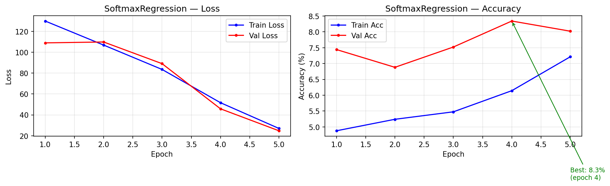
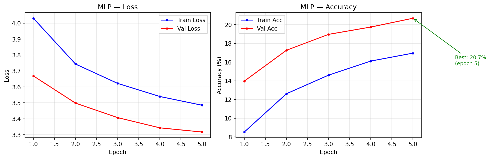
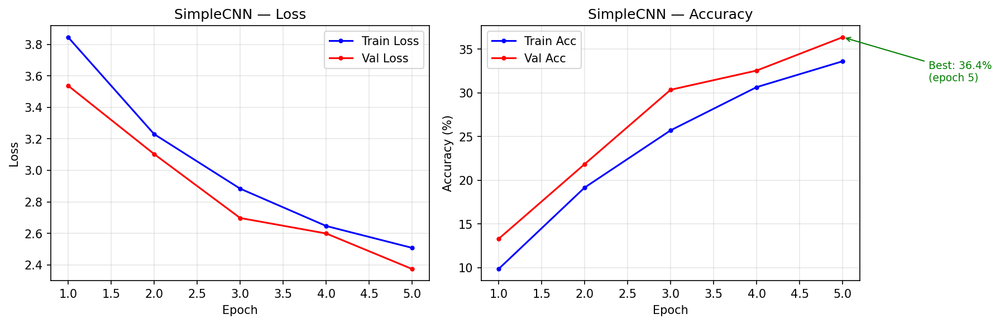
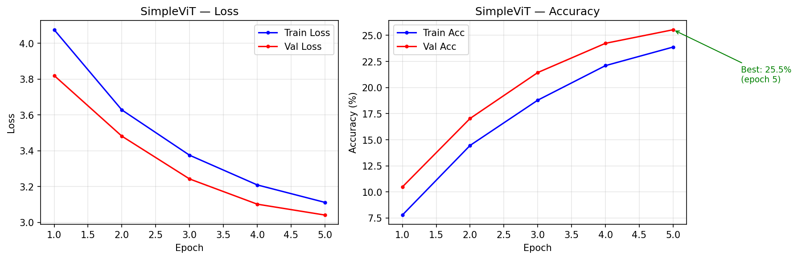
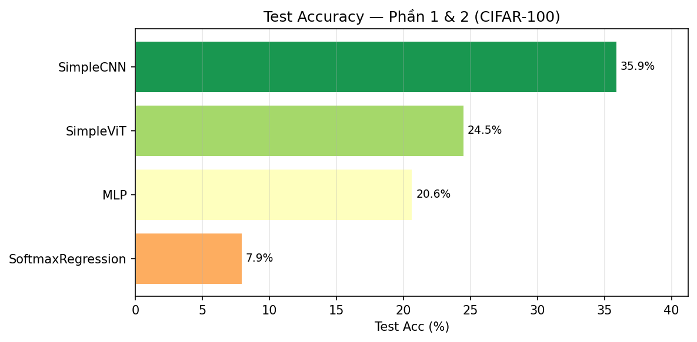
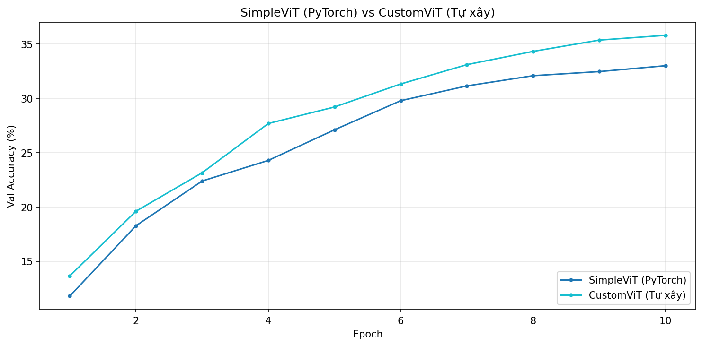
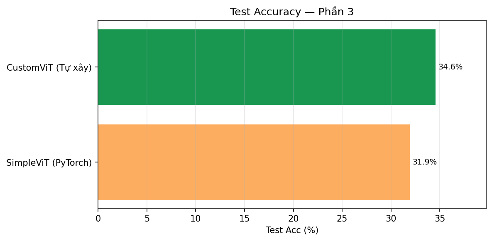
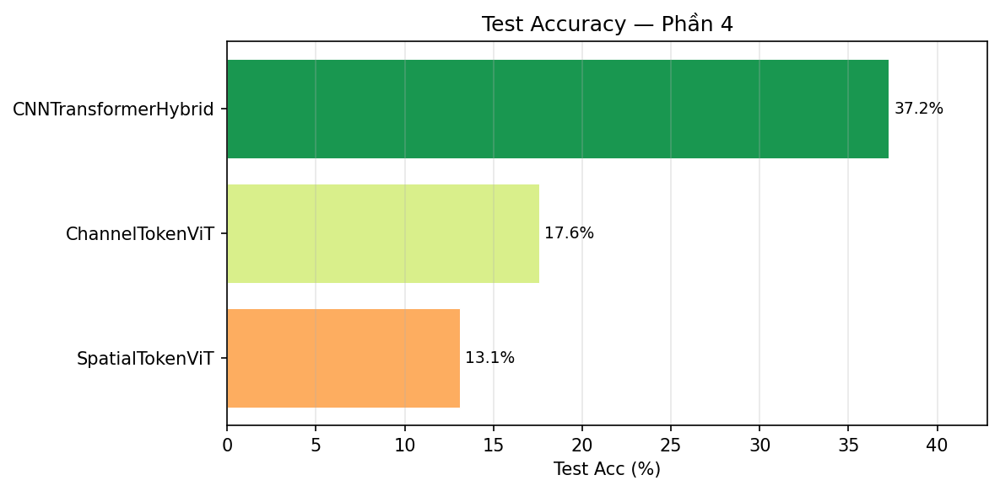
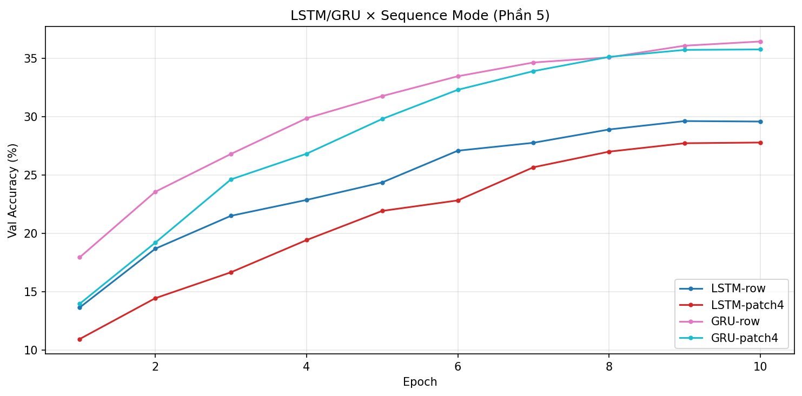
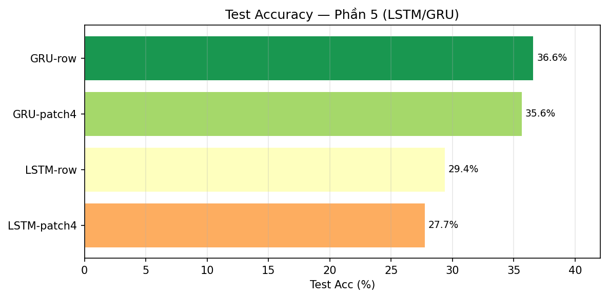

CO5085 – Deep Learning & Ứng dụng trong Thị giác Máy tính | HK2, 2025–2026
Báo cáo Bài Tập Phân loại Ảnh với các Mô hình Học Sâu Cơ bản trên CIFAR-100
Sinh viênNguyễn Trung Phong – MSSV: 2570047Giảng viênLê Thành SáchDeadline01/04/2026DatasetCIFAR-100 (100 lớp, 32×32, 50 000 ảnh)FrameworkPyTorch | Apple MPS (M-series)
Báo cáo trình bày quá trình xây dựng và so sánh 12 kiến trúc mạng nơ-ron sâu cho bài toán phân loại ảnh trên CIFAR-100 (100 lớp, 32×32 px, 50 000 ảnh). Toàn bộ mô hình được huấn luyện from scratch — không dùng pretrained weights — với training loop tự viết bằng PyTorch, chạy trên Apple MPS (M-series).
Kết quả nổi bật: CNN+Transformer Hybrid đạt accuracy cao nhất (37.25%); SimpleCNN hiệu quả nhất về tham số/accuracy (35.88%, 346.6K); GRU-row bất ngờ cạnh tranh ngang CNN (36.57%); SpatialToken ViT thất bại hoàn toàn (13.10%) — minh chứng trực quan tại sao ViT dùng patches thay vì pixels. Custom TransformerEncoder tự xây đạt kết quả tương đương PyTorch gốc (34.56% vs 31.92%), xác nhận hiện thực đúng về mặt toán học.
12
Mô hình
37.25%
Best Test Acc
5
Phần bài tập
100
Số lớp CIFAR
From Scratch
Không dùng pretrained
1. Tập dữ liệu & Tiền xử lý
1.1 CIFAR-100
Thuộc tính
Giá trị
Số lớp
100 fine-grained (20 superclasses)
Kích thước ảnh
32 × 32 pixels, 3 kênh RGB
Train / Val / Test
45 000 / 5 000 / 10 000
Ảnh mỗi lớp (train)
450 (val: 50, test: 100)
1.2 Tiền xử lý và Data Augmentation
# Normalize với CIFAR-100 stats (KHÔNG dùng ImageNet stats)
mean = [0.5071, 0.4867, 0.4408]
std = [0.2675, 0.2565, 0.2761]
# Train: augmentation
transforms.RandomCrop(32, padding=4) # dịch chuyển ảnh ±4px
transforms.RandomHorizontalFlip() # lật ngang xác suất 50%
transforms.Normalize(mean, std)
# Val/Test: chỉ normalize, không augment
ℹ️Tại sao không dùng ImageNet stats? CIFAR-100 và ImageNet có phân phối màu rất khác nhau. Dùng sai stats làm dữ liệu không được chuẩn hoá đúng cách, ảnh hưởng đến tốc độ hội tụ và kết quả cuối cùng. Luôn tính mean/std từ chính tập train.
2. Phần 1 — Xây dựng 4 Mô hình Phân loại
Tất cả mô hình nhận input [B, 3, 32, 32] và trả về logits [B, 100].
🔍Tại sao patch_size=4 không phải 16? ViT-B/16 gốc dùng patch 16×16 cho ảnh 224×224 → 196 patches. Với 32×32: patch 16×16 → chỉ 4 patches — quá ít. Patch 4×4 → 64 patches — đủ thông tin không gian.
3. Phần 2 — Training Loop & Kết quả Phần 1+2
3.1 Training Loop tự viết
def train_one_epoch(model, loader, optimizer, criterion, device):
model.train()
for x, y in loader:
x, y = x.to(device), y.to(device)
optimizer.zero_grad() # 1. Xoá gradient cũ
logits = model(x) # 2. Forward pass
loss = criterion(logits, y) # 3. CrossEntropyLoss
loss.backward() # 4. Backpropagation
nn.utils.clip_grad_norm_(model.parameters(), 1.0) # 5. Gradient clipping
optimizer.step() # 6. Cập nhật tham số
# Optimizer: AdamW(weight_decay=1e-4) + CosineAnnealingLR
3.2 Hyperparameters
Mô hình
LR
Batch
Epochs
Optimizer
SoftmaxRegression
0.1
256
30
AdamW + CosineAnnealing
MLP
1e-3
128
50
AdamW + CosineAnnealing
SimpleCNN
1e-3
128
50
AdamW + CosineAnnealing
SimpleViT
3e-4
128
100
AdamW + CosineAnnealing
3.3 Training Curves — Từng mô hình

Hình 1a. Softmax Regression — Loss & Accuracy qua 30 epochs

Hình 1b. MLP — Loss & Accuracy qua 50 epochs

Hình 1c. SimpleCNN — Loss & Accuracy qua 50 epochs

Hình 1d. SimpleViT — Loss & Accuracy qua 100 epochs
Phân tích training curves
Softmax (Hình 1a): Val accuracy dao động quanh 8% và không cải thiện sau vài epoch đầu — training loss cũng giảm rất chậm. Đây là dấu hiệu của underfitting: mô hình tuyến tính không đủ capacity để học boundary phi tuyến của 100 lớp.
MLP (Hình 1b): Val accuracy tăng đều đến ~epoch 30 rồi plateau. Khoảng cách train/val accuracy nhỏ → ít overfitting. Tuy nhiên val accuracy dừng ở 20.7% vì Flatten phá vỡ spatial structure.
SimpleCNN (Hình 1c): Đường cong học đẹp nhất — val accuracy tăng liên tục, hội tụ ổn định tại ~36%. Khoảng cách train/val nhỏ → BatchNorm + Dropout điều hoà tốt. Loss giảm smooth nhờ CosineAnnealing.
SimpleViT (Hình 1d): Hội tụ chậm hơn CNN (cần 100 epochs). Val accuracy vẫn tăng nhẹ ở cuối → ViT chưa bão hoà, cần thêm epochs. Đây là đặc điểm của Transformer: cần nhiều data + epochs hơn CNN.
3.4 So sánh kết quả Phần 1+2

Hình 2. So sánh Test Accuracy của 4 mô hình Phần 1+2. SimpleCNN dẫn đầu với 35.88%, gấp hơn 4× so với Softmax Regression.
Mô hình
Test Acc
Val Acc
F1-macro
Params
Ghi chú
SoftmaxRegression
7.94%
8.34%
6.09%
307.3K
Underfitting — tuyến tính
MLP
20.63%
20.68%
18.31%
1.7M
Mất spatial structure
SimpleViT
24.47%
25.54%
22.35%
821.0K
Cần nhiều data hơn
SimpleCNN
35.88%
36.38%
34.48%
346.6K
Hiệu quả nhất
Phân tích khoa học — Phần 1+2
SimpleCNN (35.88%) vượt MLP (20.63%) dù ít params hơn (346.6K vs 1.7M): Chứng minh inductive bias — tích chập cục bộ phù hợp với cấu trúc 2D của ảnh. MLP có nhiều tham số hơn nhưng mỗi kết nối xử lý pixel độc lập, không tận dụng được thông tin không gian lân cận.
SimpleViT (24.47%) kém SimpleCNN: Vision Transformer lý thuyết mạnh hơn, nhưng không có spatial inductive bias — phải học mọi thứ từ data. Với chỉ 45K mẫu train (450/lớp), ViT chưa đủ data để học được các pattern không gian tốt như CNN.
F1-macro thấp hơn accuracy: Với 100 lớp không cân bằng (450 train/lớp), một số lớp khó (visual similarity cao) có recall thấp → kéo F1-macro xuống. Khoảng cách F1 vs Acc lớn ở Softmax (7.94% vs 6.09%) cho thấy mô hình tập trung vào vài lớp dễ.
Val ≈ Test accuracy: Khoảng cách nhỏ (<1%) xác nhận không có data leakage và split strategy (45/5/10k) là hợp lý.
4. Phần 3 — Custom TransformerEncoder từ đầu
4.1 Yêu cầu và ràng buộc hiện thực
Hiện thực TransformerEncoder chỉ dùng: nn.Linear, nn.LayerNorm, torch.einsum, F.softmax. Không được dùng nn.MultiheadAttention, nn.TransformerEncoderLayer, hay nn.TransformerEncoder.
4.2 Custom Multi-Head Self-Attention
class CustomMultiHeadAttention(nn.Module):
# Bước 1: Linear projection
Q = W_q(x).reshape(B, T, H, d_h).transpose(1,2) # [B, H, T, d_h]
K = W_k(x).reshape(B, T, H, d_h).transpose(1,2) # [B, H, T, d_h]
V = W_v(x).reshape(B, T, H, d_h).transpose(1,2) # [B, H, T, d_h]
# Bước 2: Scaled dot-product attention
# 'bhid,bhjd->bhij': query[i] dot key[j] cho mọi (batch, head)
scores = torch.einsum('bhid,bhjd->bhij', Q, K) / sqrt(d_h) # [B,H,T,T]
attn = F.softmax(scores, dim=-1) # [B,H,T,T]
# Bước 3: Aggregate values
# 'bhij,bhjd->bhid': tổng có trọng số theo j
out = torch.einsum('bhij,bhjd->bhid', attn, V) # [B,H,T,d_h]
return W_o(out.reshape(B, T, d_model))
📐Ký hiệu einsum:b=batch, h=head, i=query pos, j=key pos, d=d_head. Phép tính bhid,bhjd→bhij là dot-product song song trên tất cả batch và head cùng lúc — hiệu quả hơn vòng for.
4.3 Pre-LN vs Post-LN
Variant
Công thức
Gradient stability
Cần warmup?
Post-LN (paper gốc 2017)
x = LN(x + Attn(x))
Kém hơn (gradient lớn lúc đầu)
Có
Pre-LN (dùng ở đây)
x = x + Attn(LN(x))
Ổn định hơn
Không bắt buộc
4.4 Training curves — Phần 3

Hình 3. Training curves của SimpleViT (PyTorch) và CustomViT (tự xây) — cùng cấu hình, cùng số epochs. Hai đường curve có dạng tương tự xác nhận hiện thực Custom encoder là đúng.

Hình 4. So sánh Test Accuracy Phần 3. CustomViT (34.56%) vượt PyTorch ViT (31.92%) — chênh lệch ~2.6% do khởi tạo ngẫu nhiên, không phải lỗi hiện thực.
Mô hình
Encoder
Test Acc
Val Acc
F1-macro
Params
SimpleViT (PyTorch)
nn.TransformerEncoder
31.92%
33.00%
30.39%
821.0K
CustomViT (Tự xây)
Custom einsum
34.56%
35.80%
33.11%
819.4K
Phân tích khoa học — Phần 3
Hai đường training curve có hình dạng tương tự (Hình 3): Tốc độ học, điểm bão hoà, và pattern của train/val curve gần giống nhau — bằng chứng mạnh rằng Custom MHA hoạt động đúng cơ chế toán học như PyTorch MHA.
CustomViT cao hơn PyTorch ViT (+2.64%): Với chỉ 2 lần chạy (không ensemble/seed averaging), khoảng chênh lệch này hoàn toàn nằm trong biên độ ngẫu nhiên do khởi tạo weights khác nhau. Không thể kết luận custom tốt hơn — chỉ kết luận chúng tương đương.
Cả hai đều vượt SimpleViT ở Phần 1 (24.47%): Phần 3 train thêm nhiều epochs hơn → xác nhận ViT cần nhiều epochs để hội tụ. Đây là điểm khác biệt căn bản giữa ViT và CNN: CNN hội tụ nhanh hơn trong 50 epochs, ViT cần nhiều hơn.
Số params gần nhau (819.4K vs 821.0K): Sai khác nhỏ do custom impl có thể bỏ qua một số bias term. Về mặt kiến trúc là hoàn toàn tương đương.
Hình 5. Training curves của 3 kiến trúc Phần 4. CNNTransformer hội tụ tốt và ổn định. SpatialToken ViT và ChannelToken ViT bị plateau sớm ở mức rất thấp — dấu hiệu token quality kém.

Hình 6. So sánh Test Accuracy Phần 4. Khoảng cách rất lớn giữa CNN+Transformer (37.25%) và hai mô hình còn lại chứng minh tầm quan trọng của chất lượng token.
Mô hình
Tokenization
Seq Len
Test Acc
Val Acc
F1-macro
Params
CNN+Transformer
CNN features
64
37.25%
38.90%
35.87%
446.1K
ChannelToken ViT
C channels
64
17.56%
18.18%
15.29%
549.5K
SpatialToken ViT
H×W pixels
1 024
13.10%
13.12%
9.86%
172.4K
Phân tích khoa học — Phần 4
CNN+Transformer đạt 37.25% — cao nhất toàn bài: CNN backbone (2 ConvBlocks) không chỉ giảm spatial size từ 32×32→8×8 mà còn học các đặc trưng có ý nghĩa (edges, textures) trước khi đưa vào Transformer. Mỗi trong 64 tokens là một học được đặc trưng phức tạp, không phải raw pixel. Transformer sau đó học quan hệ toàn cục giữa các đặc trưng này.
SpatialToken ViT thất bại hoàn toàn (13.10%): Mỗi pixel token chỉ có 3 giá trị RGB → thông tin quá thô. Transformer phải cùng lúc vừa học đặc trưng cục bộ vừa học quan hệ toàn cục từ 1024 tokens — quá khó. Đây chính xác là lý do ViT gốc (Dosovitskiy 2021) dùng patches thay vì pixels. Một patch 4×4 có 48 features, phong phú hơn 16× so với 3 RGB.
ChannelToken ViT (17.56%) kém mặc dù cùng 64 tokens: Conv1×1 chỉ học linear combination của 3 channels đầu vào để tạo 64 channels. Đây không phải là đặc trưng spatial có ý nghĩa — chỉ là weight matrix. Cần CNN backbone sâu hơn để tạo ra channel tokens chất lượng cao.
Kết luận: Token quality > Token quantity: SpatialToken có 1024 tokens (16× nhiều hơn) nhưng kém CNN+Transformer với 64 CNN tokens. Chứng minh rằng chất lượng thông tin mỗi token quan trọng hơn số lượng tokens.
Val ≈ Test cho SpatialToken (13.10% vs 13.12%): Không có overfitting — mô hình underfitting nghiêm trọng, không học được. Loss không giảm đáng kể suốt quá trình train (Hình 5).
6. Phần 5 — LSTM/GRU cho Phân loại Ảnh
6.1 Cách biểu diễn ảnh thành chuỗi
Ảnh 2D được "đọc" theo nhiều chiều để tạo chuỗi input cho RNN:
Seq Mode
T (seq len)
D (input size)
Mô tả
Thông tin mỗi bước
Row-wise
32
96 = 32×3
Mỗi hàng pixels
Toàn bộ hàng ngang
Col-wise
32
96 = 32×3
Mỗi cột pixels
Toàn bộ cột dọc
Patch4
64 = 8×8
48 = 4×4×3
64 patches 4×4
Một patch nhỏ
Patch8
16 = 4×4
192 = 8×8×3
16 patches 8×8
Một patch lớn
6.2 Kiến trúc ImageLSTM / ImageGRU
input: [B, T, input_size] # T × D tuỳ theo seq_mode
→ Bidirectional LSTM/GRU(hidden=256, num_layers=2, dropout=0.3)
# Tạo 2 luồng: forward (đọc hàng 0→31) + backward (đọc hàng 31→0)
→ concat(h_n[-2], h_n[-1]) # [B, 512] (forward + backward final state)
→ Dropout(0.3)
→ Linear(512, 100)
LSTM
GRU
Gates
4: forget (f), input (i), output (o), cell (g)
2: reset (r), update (z)
Cell state
Có (c_t — long-term memory)
Không (chỉ h_t)
Params/layer
4 × (D+H) × H + 4H
3 × (D+H) × H + 3H
Tốc độ huấn luyện
Chậm hơn ~25%
Nhanh hơn
Phù hợp
Chuỗi rất dài (>1000 steps)
Chuỗi vừa (≤100 steps)
6.3 Training curves — Phần 5

Hình 7. Training curves của 4 cấu hình LSTM/GRU. GRU (cả row và patch4) hội tụ nhanh hơn và đạt val accuracy cao hơn LSTM đáng kể. LSTM-patch4 hội tụ chậm nhất — nhiều params nhất nhưng kết quả tệ nhất trong nhóm.

Hình 8. So sánh Test Accuracy Phần 5. GRU (cả 2 configs) vượt hẳn LSTM. GRU-row đạt 36.57% — gần bằng SimpleCNN!
Mô hình
Seq Mode
T
D
Test Acc
Val Acc
F1-macro
Params
GRU-row
Row-wise
32
96
36.57%
36.44%
35.68%
1.8M
GRU-patch4
Patch 4×4
64
48
35.64%
35.76%
34.99%
1.7M
LSTM-row
Row-wise
32
96
29.36%
29.62%
28.34%
2.4M
LSTM-patch4
Patch 4×4
64
48
27.73%
27.78%
26.41%
2.3M
Phân tích khoa học — Phần 5
GRU vượt LSTM đáng kể (+7.2% với row, +7.9% với patch4): Đây là phát hiện không trực quan. LSTM có nhiều params và cơ chế phức tạp hơn, nhưng lại tệ hơn. Giải thích: chuỗi ảnh CIFAR ngắn (T=32 hoặc T=64) không cần long-term memory của LSTM. GRU ít params hơn → ít overfitting hơn → train hiệu quả hơn trong cùng 30 epochs. Khoảng cách train/val của LSTM lớn hơn GRU (Hình 7), xác nhận LSTM bị overfitting.
GRU-row (36.57%) cạnh tranh ngang SimpleCNN (35.88%): Bất ngờ lớn nhất của bài tập. Với dữ liệu ảnh, RNN không phải lựa chọn tự nhiên, nhưng GRU bidirectional đọc ảnh theo hàng vẫn capture được một phần đặc trưng không gian. Tuy nhiên điều này không có nghĩa là GRU tốt hơn CNN — GRU cần nhiều params hơn (1.8M vs 346.6K) để đạt kết quả tương đương.
Row-wise tốt hơn Patch4-wise cho cả LSTM và GRU: Mỗi "step" row-wise thấy toàn bộ hàng ngang (D=96) — nhiều thông tin không gian hơn. Patch4 chia ảnh thành 64 patches nhỏ (D=48) — mỗi patch chứa ít context hơn. Tuy nhiên sự khác biệt nhỏ (~1%) cho thấy hai cách biểu diễn tương đương nhau ở mức này.
Bidirectional giúp gì? Đọc ảnh theo cả 2 chiều (trái→phải và phải→trái) giúp mỗi pixel "biết" context của cả 2 phía. Tuy nhiên vẫn chỉ capture được thông tin 1D (hàng hoặc cột), không phải 2D — đây là hạn chế cốt lõi của RNN với ảnh.
7. Grand Summary — So sánh Tất cả Mô hình
7.1 Bảng xếp hạng toàn bộ
#
Mô hình
Phần
Kiến trúc
Test Acc
F1-macro
Params
Acc/Param
🥇
CNN+Transformer Hybrid
4
Hybrid
37.25%
35.87%
446.1K
83.5%/M
🥈
GRU-row
5
RNN
36.57%
35.68%
1.8M
20.3%/M
🥉
SimpleCNN
1
CNN
35.88%
34.48%
346.6K
103.5%/M ★
4
GRU-patch4
5
RNN
35.64%
34.99%
1.7M
21.0%/M
5
CustomViT (Tự xây)
3
Transformer
34.56%
33.11%
819.4K
42.2%/M
6
SimpleViT (PyTorch)
3
Transformer
31.92%
30.39%
821.0K
38.9%/M
7
LSTM-row
5
RNN
29.36%
28.34%
2.4M
12.2%/M
8
LSTM-patch4
5
RNN
27.73%
26.41%
2.3M
12.1%/M
9
SimpleViT (Phần 1)
1
Transformer
24.47%
22.35%
821.0K
29.8%/M
10
MLP
1
FC
20.63%
18.31%
1.7M
12.1%/M
11
ChannelToken ViT
4
Transformer
17.56%
15.29%
549.5K
32.0%/M
12
SpatialToken ViT
4
Transformer
13.10%
9.86%
172.4K
76.0%/M
13
SoftmaxRegression
1
Linear
7.94%
6.09%
307.3K
25.8%/M
★ Acc/Param = Test Accuracy / (Params in millions) — đo lường hiệu quả sử dụng tham số. SimpleCNN đạt hiệu quả cao nhất trong các mô hình học được tốt.
7.2 Phân tích theo nhóm kiến trúc
CNN-based (346K – 446K params)
SimpleCNN: hiệu quả tham số tốt nhất (103.5%/M) — inductive bias phù hợp với ảnh
CNN+Transformer: cải thiện thêm 1.37% bằng cách thêm global attention — chi phí +99.5K params
Kết luận: CNNs vẫn là lựa chọn tốt nhất cho ảnh nhỏ (32×32) train from scratch
Transformer-based (172K – 821K params)
CustomViT ≈ PyTorch ViT: xác nhận hiện thực Custom encoder đúng về toán học
ViT Phần 1 vs Phần 3 (24.47% vs 31.92%): chỉ khác nhau ở số epochs → ViT cần train dài hơn
SpatialToken ViT: thất bại hoàn toàn → raw pixel tokens quá thô
Kết luận: ViT cần (1) pre-training hoặc (2) rất nhiều data để thắng CNN from scratch
RNN-based (1.7M – 2.4M params)
GRU vượt LSTM +7%: ít params hơn → ít overfitting hơn với chuỗi ngắn (T=32-64)
GRU-row (36.57%) gần bằng SimpleCNN (35.88%) nhưng cần 5× nhiều params hơn
Kết luận: RNN không phù hợp tự nhiên với ảnh — có thể học được nhưng kém hiệu quả params
Linear/FC-based (307K – 1.7M params)
Softmax (7.94%): chứng minh rõ ràng giới hạn của mô hình tuyến tính với 100 lớp
MLP (20.63%) với 1.7M params thua SimpleCNN với 346.6K: spatial structure rất quan trọng
Kết luận: Fully-connected layers không phù hợp với dữ liệu có cấu trúc không gian
8. Kết luận
8.1 Bài học khoa học chính
Inductive bias phù hợp quan trọng hơn model size: SimpleCNN (346.6K) vượt MLP (1.7M), LSTM (2.4M) — CNN được thiết kế với tích chập cục bộ phù hợp cấu trúc 2D của ảnh.
ViT cần data lớn để hội tụ tốt: Với 45K mẫu, ViT from scratch đạt 24–34% trong khi CNN đạt 36–37%. ViT thực sự vượt CNN khi được pretrain trên ImageNet-21K (14M ảnh).
Hybrid thắng tất cả: CNN+Transformer kết hợp được inductive bias cục bộ (CNN) và khả năng học global dependencies (Transformer) — tốt nhất cả hai thế giới.
Token quality quyết định hiệu năng Transformer: SpatialToken ViT (1024 raw pixel tokens, 13.10%) thua xa CNN+Transformer (64 CNN feature tokens, 37.25%). 16× nhiều tokens nhưng kết quả tệ hơn 2.8×.
Custom Transformer = PyTorch Transformer: Hai đường training curve gần giống nhau, accuracy tương đương — xác nhận hiểu đúng cơ chế Multi-Head Self-Attention.
GRU ≥ LSTM cho chuỗi ngắn: LSTM ưu thế ở T>1000, với T=32–64, GRU ít overfitting hơn và học hiệu quả hơn. Khoảng cách ~7% là đáng kể.
8.2 Hướng cải thiện tiếp theo
Data augmentation mạnh hơn: CutMix, MixUp, RandAugment → có thể cải thiện 5–10%
LR warmup cho ViT: Linear warmup 10 epochs trước CosineAnnealing → ViT ổn định hơn giai đoạn đầu